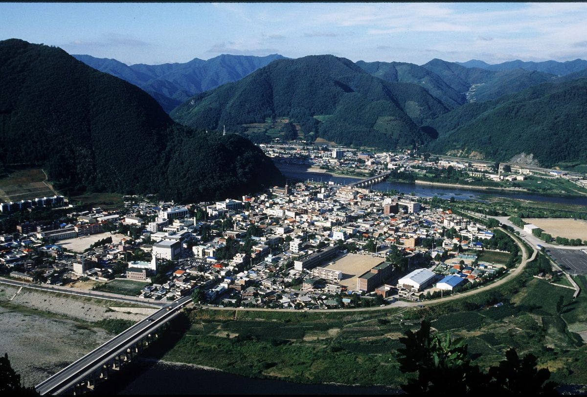
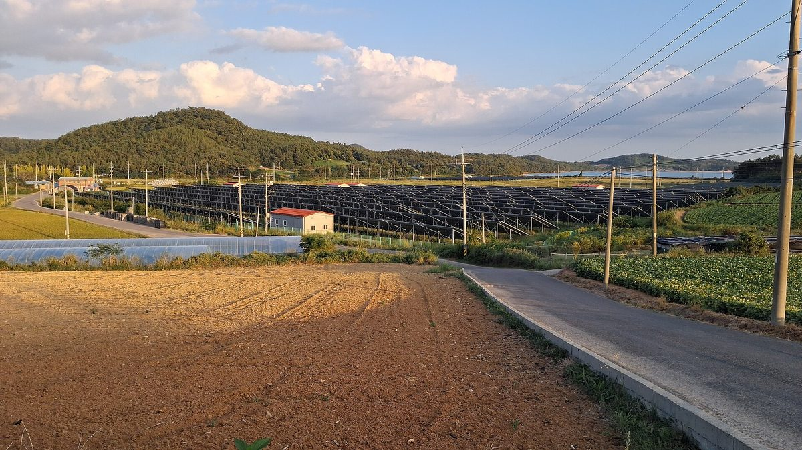
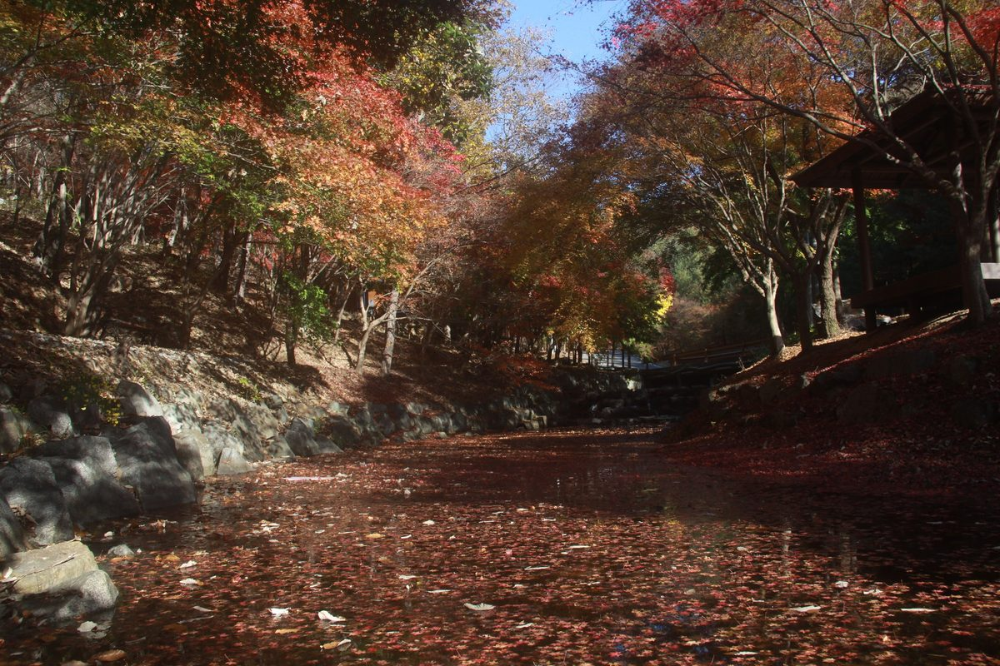
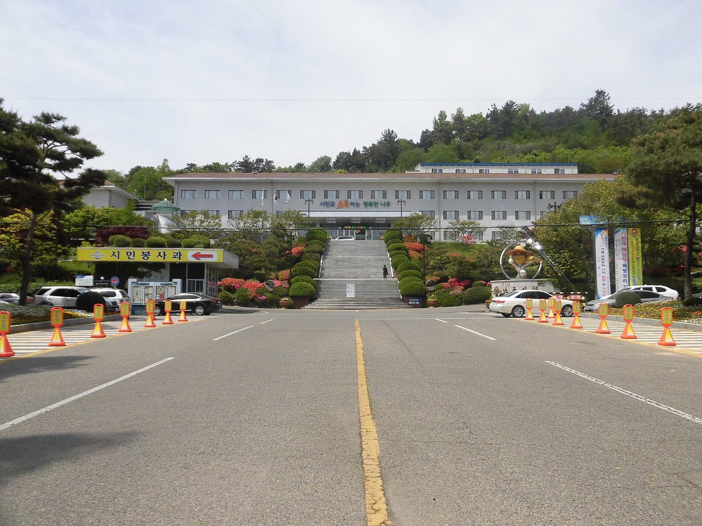
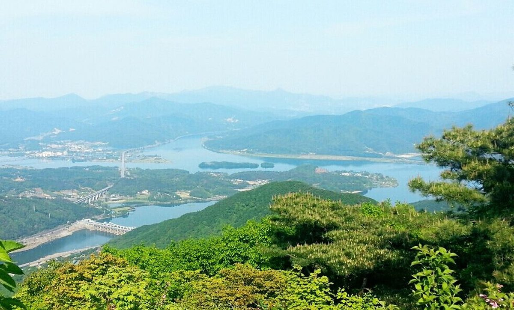
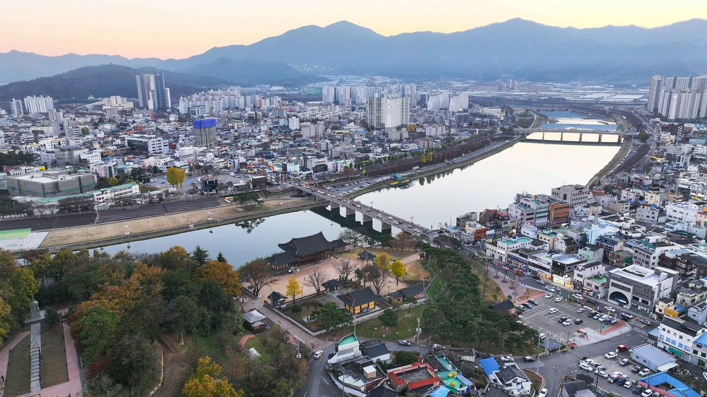
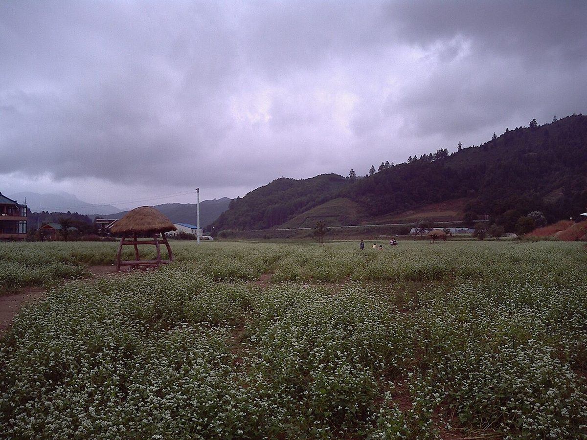
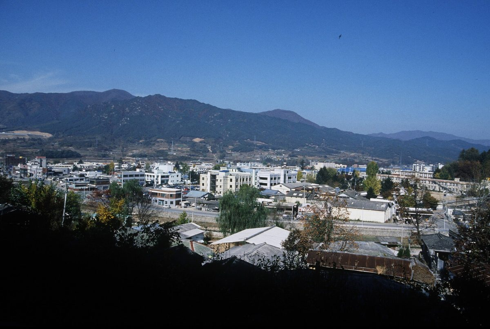
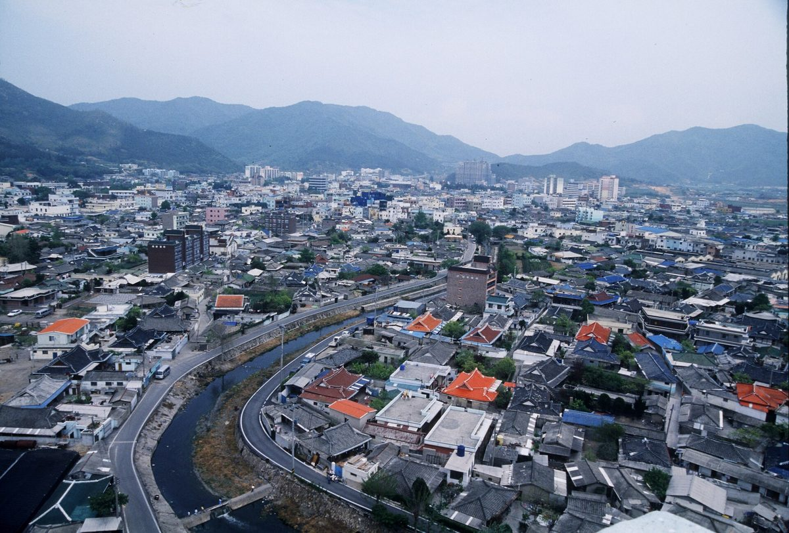
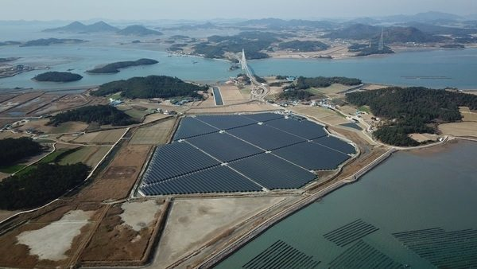

햇빛소득마을
정선군, 군유지 활용 100MW 태양광에 공공 지분 참여 검토…육상풍력 6곳 163.1MW와 함께 햇빛소득·바람소득 구상
강원랜드 배당금과 자연자원 수익을 주민 생활 재원으로 돌린다는 민선 9기 지역경제 구상…태양광 위치·지분율·주민 배분 방식은 아직 알려지지 않아

햇빛소득마을 523곳 이름 올렸지만 1차 86곳 중 바로 착수 가능한 곳은 9곳…선정보다 가동 숫자 내놔야 지적
정부 목표 올해 700곳·2030년 3,000곳…나머지 마을은 부지·자금·선로 여유 확인이 숙제, 사업비 15%는 주민 몫·전국 접속 대기 설비 4,000MW

화순군, 공모·상수원 지원금 53억여 원 묶어 2027~2028년 햇빛소득마을·에너지자립형 마을 추진
사평면 절산2리 햇빛소득마을에 13억9,100만 원…마을회관 2곳 설비 5,700만 원, 5개 마을 59가구 주택용 설비 10억6,250만 원

나주 햇빛소득마을 10곳 중 9곳 전력망 포화로 ESS 필요…시의회, 마을 수보다 주민 소득·재정 대책 먼저 요구
황광민 의원 시정질문, 100개 마을이면 지방비 최소 200억 원 주장…윤병태 시장, ESS 비용 정부 40%·지방 30%·사업자 30% 분담안 논의 중이라며 표준모델 마련 약속

영산강유역환경청, 상수원관리지역 햇빛소득마을 9곳 등 6개 시군 11개 사업에 수계기금 92억 원 지원
2027년 새로 도입하는 재생에너지 특별지원사업…햇빛소득마을 73억 원·가구와 마을 공동시설 히트펌프 19억 원, 공모 예산 264억 원 중 남은 몫은 연내 추가 공모

한강수계 상수원 주민지원 355억 원 확정…햇빛소득마을 13곳에 138억 원
2027년도 특별지원사업에 재생에너지 분야 처음 공모해 221억 원 배정…가평·양평·광주·여주·이천·춘천 주민 협동조합이 태양광 설치·운영, 주택 645가구·마을공동시설 51곳도 지원

밀양 웅동·중산·용포마을 햇빛소득마을 2차 선정…2곳은 즉시 추진 가능
1차 덕곡마을 더해 4곳…전국 2차 608곳 신청·436곳 선정, 바로 추진할 수 있는 곳은 23곳

평창 4개 마을 햇빛소득마을 2차 '조건부' 선정…계통 포화로 ESS 연계가 조건
하안미4리·원길2리·면온1리·진조리…같은 선로 마을 추가 선정도 필요, 군 "선정이 곧 발전사업 추진은 아냐"

햇빛소득마을 시공·운영 전문기업 243곳 등록…에너지공단, 최저발전량 미달 땐 차액 보전하는 운영지침 시행
ReSCO 등록 4개월 새 86곳(54.8%) 늘어…부실시공 땐 5년 참여 제한, 업체 부도 땐 다른 등록기업 연계, 마을과 실제 계약은 아직 없어

장수군 햇빛소득마을 지원 조례 군의회 통과…공공부지 활용·마을조합 설립 지원 근거 마련
김남수 의원 발의, 14일 제388회 임시회서 원안 가결…기본계획·주민교육·관계기관 협력 근거도 담아

여러 마을이 함께 쓴 저수지, 수상태양광 참여는 부지 마을만…햇빛소득마을 기준 개선 요구
현행 공고는 행정리 안 부지만 인정하고 다른 행정리 부지는 연합조합 구성 조건…행안부 추진단, 올해 3차 선정까지 현행 기준 유지하고 내년 평가 반영 여부 검토

해남군, 2030년까지 햇빛소득마을 100곳 목표…19곳 조건부 선정 이어 3차 공모 접수
마을별 300kW~1MW, 설치비 최대 85% 융자…3차 결과는 12월 말 발표, 신흥·고당마을은 이의신청 예정

신안 주민참여 태양광, 가입비 1만 원에 수백만 원 배당…주민 실투자 비중은 낮아
안좌도·자라도 120MW, 주민 몫 140억 원은 협동조합 대출로…거리 따라 1인 연 68만~204만 원

太陽光所得村
旌善郡、郡有地を活用した100MW太陽光に公共の持ち分参加を検討…陸上風力6カ所163.1MWとともに「太陽光所得・風所得」構想
江原ランドの配当金と自然資源の収益を住民生活の財源に回すという民選9期の地域経済構想…太陽光の場所・持ち分比率・住民への配分方法はまだ明らかでない
太陽光所得村は523カ所が選定されたが1次86カ所のうちすぐ着工できたのは9カ所…選定数より稼働数を示すべきとの指摘
政府目標は今年700カ所・2030年3,000カ所…残る村は用地・資金・送電線の余裕確認が課題、事業費の15%は住民負担・全国の接続待ち設備は4,000MW
和順郡、公募と上水源支援金の53億ウォン余りを束ね、2027～2028年に太陽光所得村とエネルギー自立型村を推進
サピョン面チョルサン2里の太陽光所得村に13億9,100万ウォン…村の集会所2カ所の設備に5,700万ウォン、5つの村の59世帯に住宅用設備10億6,250万ウォン
羅州の「日差し所得村」10村中9村が送配電網の飽和でESSが必要…市議会、村の数より住民所得と財政対策を先にと要求
ファン・グァンミン議員が市政質問、100村なら地方費は最低200億ウォンと主張…ユン・ビョンテ市長、ESS費用を政府40%・地方30%・事業者30%で分担する案を協議中とし標準モデル整備を約束
栄山江流域環境庁、上水源管理地域の太陽光所得村9か所など6市郡11事業に水系基金92億ウォンを支援
2027年に新設する再生可能エネルギー特別支援事業…太陽光所得村に73億ウォン、世帯と村の共同施設のヒートポンプに19億ウォン、公募予算264億ウォンの残りは年内に追加公募
漢江水系の上水源住民支援355億ウォン確定…日差し所得村13カ所に138億ウォン
2027年度特別支援事業で再生可能エネルギー分野を初めて公募し221億ウォンを配分…加平・楊平・広州・驪州・利川・春川の住民協同組合が太陽光を設置・運営、住宅645世帯・集落共同施設51カ所も支援
密陽のウンドン・チュンサン・ヨンポ村が太陽光所得村の第2次に選定…2カ所はすぐ推進可能
第1次のトッコク村と合わせ4カ所…全国の第2次は608カ所が申請・436カ所を選定、すぐ推進できるのは23カ所
平昌の4集落が「太陽光所得村」第2次公募に「条件付き」選定…系統の飽和でESS連系が条件
下安味4里・院吉2里・綿温1里・陳鳥里…同じ配電線の集落の追加選定も必要、郡「選定がすぐ発電事業の推進を意味するわけではない」
太陽光所得村の施工・運営専門企業が243社登録…エネルギー公団、最低発電量に届かなければ差額を補填する運営指針を施行
ReSCO登録は4か月で86社（54.8%）増加…手抜き工事なら5年間の参加制限、業者倒産時は別の登録企業につなぐ、村との実際の契約はまだゼロ
長水郡の太陽光所得村支援条例が郡議会を通過…公共用地の活用・村組合設立支援の根拠を整備
キム・ナムス議員が発議、14日の第388回臨時会で原案可決…基本計画・住民教育・関係機関との協力の根拠も盛り込む
複数の集落がともに使ってきた貯水池、水上太陽光に参加できるのは用地の集落だけ…太陽光所得村の基準見直しを求める声
現行の公告は行政里内の用地のみを認め、他の行政里の用地は連合組合の結成が条件…行政安全部推進団は今年の第3次選定まで現行基準を維持し、来年の評価への反映を検討
海南郡、2030年までに太陽光所得村100カ所を目標…19カ所の条件付き選定に続き第3次公募を受け付け
村ごとに300kW～1MW、設置費の最大85%を融資…第3次の結果は12月末に発表、新興・古堂の2村は異議申し立ての予定
新安の住民参加型太陽光、加入費1万ウォンで数百万ウォンの配当…住民の実投資比率は低く
安佐島・チャラ島の120MW、住民分140億ウォンは協同組合の融資で…距離に応じて1人年68万〜204万ウォン
阳光收入村
韩国旌善郡研究由公共部门以股份参与利用郡有地的100MW太阳能项目，与6处共163.1MW陆上风电一起推进阳光收入和风力收入构想
第九届民选郡政府的地方经济构想：把江原乐园分红和自然资源收益用作居民生活财源…太阳能项目位置、持股比例和居民分配方式尚未公开
阳光收入村已有523处入选，但首批86处中可立即开工的仅9处，有观点认为应先公布投运数量而非入选数量
政府目标为今年700处、2030年3,000处…其余村庄须解决用地、资金和线路余量问题，项目费用15%由居民承担，全国等待并网的发电设备达4,000MW
韩国和顺郡整合公募资金与水源地支援金53亿多韩元，2027～2028年推进阳光收入村和能源自立型村庄
Sapyeong面Jeolsan 2里阳光收入村投入13亿9,100万韩元…2处村会馆设备5,700万韩元，5个村庄59户住宅用设备10亿6,250万韩元
罗州"阳光收入村"10个中9个因输配电网饱和需配储能…市议会要求先看居民收入和财政对策而非村庄数量
议员Hwang Gwang-min市政质询称100个村地方财政负担至少200亿韩元…市长Yoon Byeong-tae表示储能费用由政府40%、地方30%、发电企业30%分担的方案正在讨论，承诺制定标准模式
荣山江流域环境厅向水源管理地区9个阳光收入村等6个市郡11个项目提供92亿韩元水系基金
2027年新设的可再生能源特别支援项目…阳光收入村73亿韩元，农户和村庄公共设施热泵19亿韩元，264亿韩元招募预算的剩余部分将于年内追加招募
韩国汉江水系水源地居民支援355亿韩元敲定…13个阳光收入村获138亿韩元
2027年度特别支援项目首次公开征集可再生能源类项目并分配221亿韩元…加平、杨平、广州、骊州、利川、春川的居民合作社建设并运营太阳能，645户住宅和51处村庄公共设施也获支持
密阳Ungdong、Jungsan、Yongpo三村入选第二批阳光收入村，其中两村可立即推进
加上第一批Deokgok村共4个村；全国第二批608个村申请、436个入选，可立即推进的为23个
阳光收入村施工运营专业企业登记达243家…能源公团施行运营指南，发电量低于最低标准须补足差额
ReSCO登记企业4个月增加86家（54.8%）…施工不良将被禁止参与5年，企业破产时可对接其他登记企业，与村庄的实际合同仍为零
长水郡阳光收入村支援条例在郡议会通过，确立利用公共用地和支持设立村组合的依据
议员Kim Nam-su提案，14日第388次临时会按原案通过；还写入基本计划、居民教育和与相关机构合作的依据
多个村庄共用的水库，只有场地所在村能参与水面太阳能…阳光收入村标准遭要求修改
现行公告只认可行政里内的场地，使用其他行政里场地须组建联合合作社…行政安全部推进团表示今年第三轮评选前维持现行标准，并研究是否在明年评审中反映
Sunlight Income Village
Jeongseon County weighs a public equity stake in 100MW of solar on county-owned land, alongside six onshore wind projects totaling 163.1MW, under a sunlight and wind income plan
Part of the county's economic vision to turn Kangwon Land dividends and natural-resource revenue into funding for residents; the solar project's location, ownership share and how residents would benefit have not been disclosed
523 Sunlight Income Villages selected, but only 9 of the first 86 were ready to start at once, prompting calls to report how many are running rather than how many are chosen
Government targets 700 villages this year and 3,000 by 2030; the rest must still secure land, money and grid headroom, residents cover 15% of costs, and 4,000MW of generation nationwide is waiting for grid connection
Hwasun County pools over 5.3 billion won from a competitive grant and water-source area support to pursue a Sunlight Income Village and energy self-reliant villages in 2027-2028
1.391 billion won for a Sunlight Income Village in Jeolsan 2-ri, Sapyeong-myeon; 57 million won for equipment at two village halls; 1.0625 billion won for home systems in 59 households across five villages
Nine of Naju's 10 sunlight income villages need battery storage because the grid is full; council member urges resident income and funding plans before expansion
Councillor Hwang Gwang-min says 100 villages would cost the city at least 20 billion won; Mayor Yoon Byeong-tae says a 40-30-30 split of storage costs among central government, local government and generators is under discussion and promises a standard model
Yeongsan River Basin Environmental Office grants 9.2 billion won from its water system fund to 11 projects in 6 cities and counties, including 9 Sunlight Income Villages in water-source areas
A renewable energy support programme launching in 2027 puts 7.3 billion won into Sunlight Income Villages and 1.9 billion won into heat pumps for homes and village facilities; the rest of the 26.4 billion won budget goes to a second call this year
Han River basin finalizes 35.5 billion won for water-source residents, including 13.8 billion won for 13 Sunlight Income Villages
The 2027 special support program opened a renewable energy category for the first time with 22.1 billion won; resident cooperatives in Gapyeong, Yangpyeong, Gwangju, Yeoju, Icheon and Chuncheon will install and run solar, and 645 homes and 51 village facilities also get support
Three Miryang villages selected in second round of Sunlight Income Villages, two ready to start right away
Four villages with first-round Deokgok; nationwide, 436 of 608 applicants selected and 23 can proceed immediately
Four Pyeongchang villages "conditionally" selected in second sunlight income village round, with grid congestion making battery storage a requirement
Haanmi 4-ri, Wongil 2-ri, Myeonon 1-ri and Jinjo-ri also need villages on the same line to be selected; county says selection does not mean projects start right away
243 firms register to build and run Sunlight Income Village plants as energy agency enforces rules requiring them to cover generation shortfalls
ReSCO registrations up 86 (54.8%) in four months; five-year ban for faulty construction, replacement firm arranged if a contractor fails; no village contracts signed yet
Jangsu council passes Sunlight Income Village ordinance, laying basis for public land use and village cooperatives
Proposed by councillor Kim Nam-su and passed unamended at the 388th extraordinary session on the 14th; also covers a basic plan, resident training and inter-agency cooperation
Reservoirs shared by several villages, but only the site village can join floating solar: calls grow to revise Sunlight Income Village rules
Current notices accept only sites inside the administrative village and require a joint cooperative for sites in another village; the interior ministry task force keeps the rules through this year's third round and will consider changes for next year's evaluation
Haenam aims for 100 Sunlight Income Villages by 2030, takes third-round applications after 19 conditional picks
300kW to 1MW per village with loans for up to 85% of installation costs; third-round results due end of December, two villages to appeal
436 villages picked in second Sunlight Income Village round, but only 23 can start now; 413 conditional
523 in total with the first round; land leases, financing plans and grid connection need work
Consultants targeting Sunlight Income Villages multiply; residents warned over demands for profit shares and project rights
Korea Energy Agency lists paying residents' contributions, side deals and principal guarantees as misconduct
Korea reports plan for over 2,500 Sunlight Income Villages in five years to the Cabinet
About 550 billion won in state funds for 2026 and a new cross-government task force, as the president cites Sinan
Presidential planning committee weighs turning sunlight pensions into equity-based fund dividends
Limits of indirect investment through co-ops noted; asset managers worry about small project size and regional gaps in returns
Sinan's resident-participation solar pays millions of won for a 10,000-won fee, but residents' real stake is small
120MW on Anjwa and Jara islands; the 14 billion won resident share was borrowed by a co-op, with payouts of 680,000 to 2.04 million won a year by distance